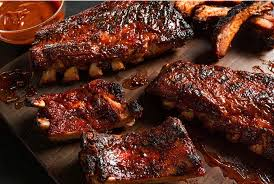

Amerika Birleşik Devletinin Yemekleri
Avrupa kolonilerinden doğan, geçmişinden dolayı hemen hemen tüm mutfakların bir sentezi olarak ortaya gelen Amerikan
mutfağı belki de tüm mutfaklardan fazla çeşit barındırıyor.

Mac ve Cheese :Kuşkusuz bir çok Amerikan filminde gözümüze çarpan o sarı soslu makarna İngilizlerin
çedar peynirinden ve İtalyanların makarnasının birleşiminden geliyor.
Barbekü Soslu Kaburga : Amerika dendiğinde akıllara gelen diğer bir yemek ise barbekü soslu kaburgadır
çünkü onlar barbekü yapmanın büyük bir fanı diyebiliriz.
Hindi :Şükran gününde yaptıkları bu hindi Amerika'nın en önemli geleneklerinden biridir. Büyüklüğü
ve tabaklarca çıkan porsiyonu ile bereketi simgelediği düşünülüyor.
Buffalo Tavuk Kanatları : Tarif için bile onlarca özel restoranları var. Özelliği ise sosun acılığının
1'den 10'a kadar yükselmesi. Genelde kereviz sapı ve rokfor ya da ranch sos ile servis ediliyor.
Pancake : İşte size bir klişe daha! Her Amerikan annesi mutlaka filmin başında ya da ortasında tavada
bir pancake çevirir. Muhtemelen geri kalanlar ise mısır gevreği ya da çırpılmış yumurta yiyordur.
Doughnut :Amerikalı polis görev başındadır ve beklerken mutlaka bir adet Dunkin Doughnut bulur ve elinde
kahvesiyle birlikte dükkandan çıkar. Her türü, her türlüsü mevcut kendisinin ama en bilineni çikolatalı,
içi Boston kremalı, çilekli ve glazed dedikleri şeker kaplamalısı.